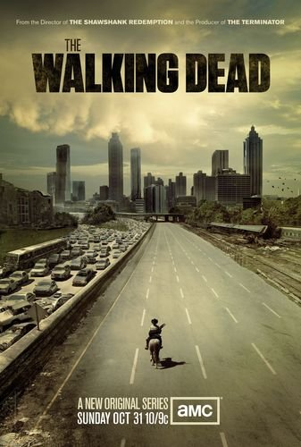

➔The Walking Dead🧟‍♀️

The Walking Dead é uma série baseada em quadrinhos/ HQ'S, escrita por Robert Kirkman, esta obra retrata a vida durante e pós apocalipse. Um grupo de sobreviventes, liderado pelo protagonista policial Rick Grimes, segue viajando em busca de uma nova moradia segura e distante dos mortos-vivos.
A pressão para permanecerem vivos e lutarem pela sobrevivência faz com que muitos do grupo sejam submetidos às mais profundas formas de crueldade humana.
Rick acaba descobrindo que o tão assustador desespero pela subsistência pode ser ainda mais fatal do que os próprios mortos-vivos que os rodeiam.
O diretor da série é o Greg Nicotero.
A série The Walking Dead tem o total de 11 temporadas.
Hoje em dia tem uma outra série chamada Fear The Walking Dead e a diferença entre as duas é que, enquanto em The Walking Dead, o público é apresentado a personagens que já estão apocalipse adentro, Fear acompanha a transição entre um mundo normal e uma realidade decadente.
E, por isso, ele não deseja ir tão rápido entre um extremo e outro.
Aqui está uma das primeiras cenas da série
>